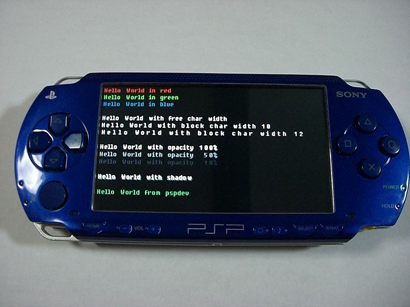

A Hello world program is a computer program that outputs Hello, world on a display device. Because it is typically one of the simplest programs possible in most programming languages, it is by tradition often used to illustrate to beginners the most basic syntax of a programming language. It is mostly used to verify that a language or system is operating correctly.
A Hello World program has become the traditional first program that many people learn. In general, it is simple enough so that people who have no experience with computer programming can easily understand it, especially with the guidance of a teacher or a written guide.
Using this simple program as a basis, computer science principles or elements of a specific programming language can be explained to novice programmers. Experienced programmers learning new languages can also gain a lot of information about a given language's syntax and structure from a hello world program.
A Hello World program running on Sony's PlayStation Portable as a proof of concept.
